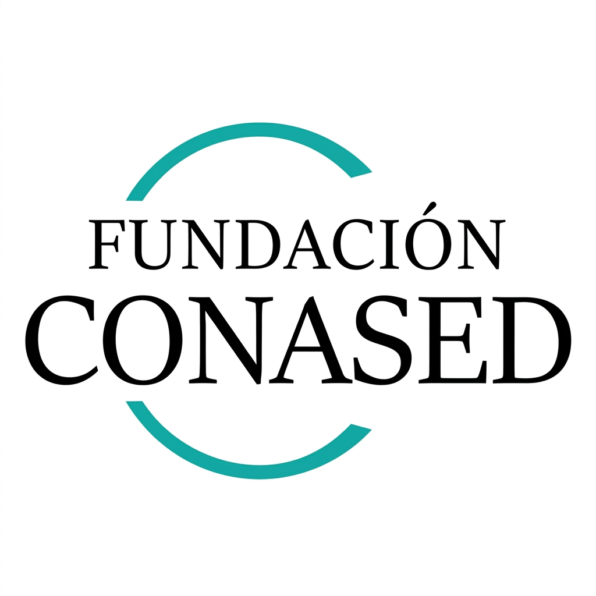

Módulo 4: Cierre y Compromiso Docente
Reflexiones finales, reconocimiento a la vocación educativa y el compromiso inquebrantable de la Fundación CONASED con la formación de los educadores y el desarrollo social de nuestra comunidad.

FUNDACIÓN CONASED
Fundación Concordiense para la Acción Social y Estudios para el Desarrollo
Ante la irrupción de la inteligencia artificial, asumimos la responsabilidad de acompañar a nuestros docentes para que la tecnología sea una herramienta de equidad y nunca una barrera de exclusión.
Capacitación Gratuita y Continua
Inclusión y Equidad Social
Acción Social y Solidaria
Ética y Enfoque Humanista
Eventos Comunitarios e Integración
Alfabetización Digital
Talleres de Oficios y Empleo
Acompañamiento Familiar
Apoyo Escolar Barrial
Deporte y Recreación Juvenil
Salud y Bienestar Comunitario
Cultura y Participación Barrial
Agradecimiento a los presentes
Aprender a dialogar con la Inteligencia Artificial exige dar un paso al frente, cuestionar viejas certezas y vencer el miedo a lo desconocido. Agradecemos profundamente su tiempo, su calidez y su compromiso inquebrantable con la educación de nuestros estudiantes.
Muchas Gracias por su Atención
«La tecnología abre caminos y multiplica posibilidades; pero son la mirada atenta, la paciencia y el corazón de los educadores lo que transforma las vidas de nuestros estudiantes.»